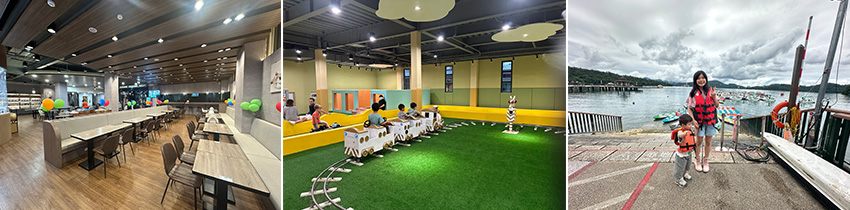

日月潭一直是國旅的熱門景點，這次趁著端午連假，我們全家決定來一趟「陸、海、空」玩透透的小旅行。
我們選擇入住伊達邵碼頭附近的喜莯民宿，這間在Google上評價超高，實際體驗後果然名不虛傳，房間寬敞乾淨，早餐精緻好吃，小朋友的餐點更是健康無負擔，完全沒有常見的炸物或甜食，對親子家庭來說非常貼心。
 |
晚上我們在伊達邵碼頭旁，發現有一間親子餐廳，裡面還有附設兒童遊戲區！原來是日月潭力麗溫得姆溫泉酒店的獨立親子館，非住客也能購票入場，開放到晚上九點。我們在這裡享用晚餐後讓孩子盡情放電，有得吃有得玩超棒的！
|  |
隔天的行程也同樣精彩。之前來日月潭，我們多半住在水社碼頭，然後搭船去玄光寺吃茶葉蛋，再到伊達邵逛商圈就結束。這次則換個玩法，從伊達邵碼頭直接體驗水上活動。這裡有SUP、獨木舟、水上腳踏車，還有最受親子歡迎的電動天鵝船。我們選了電動天鵝船環湖，輕鬆駕駛不費體力，還能一邊吹風一邊欣賞湖景，非常愜意。
接著我們搭乘日月潭纜車挑戰「透明車廂」。幸運的是天氣很好，從高空俯瞰湖面，景色非常美麗。雖然終點是九族文化村，但因為孩子還太小，暫時無法玩園區遊樂設施，只能日後再訪。
當天我們還去了向山遊客中心，被譽為「全台最美建築」的它，果然名不虛傳，推薦一定要到屋頂拍照，可以將日月潭的美景盡收眼底。晚上回到伊達邵碼頭，看到一座竹編裝置藝術，在燈光映照下顯得特別夢幻，也成為遊客搶拍的焦點。
 |
最後一天，我們選擇以最悠閒的方式結尾—租電動腳踏車環湖。日月潭的自行車道設計得非常完善，沿途有休憩區和觀景點，大人小孩都能輕鬆騎完全程，大約一小時就能完成，非常適合親子同樂。
這趟旅程，我們體驗了陸（開車、腳踏車）＋海（電動天鵝船）＋空（纜車）的全方位玩法，動線流暢又不會太趕。日月潭真的很適合帶小孩來，不僅能享受大自然美景，也有豐富的活動與貼心的親子設施，大力推薦給正在規劃家庭旅行的爸媽！